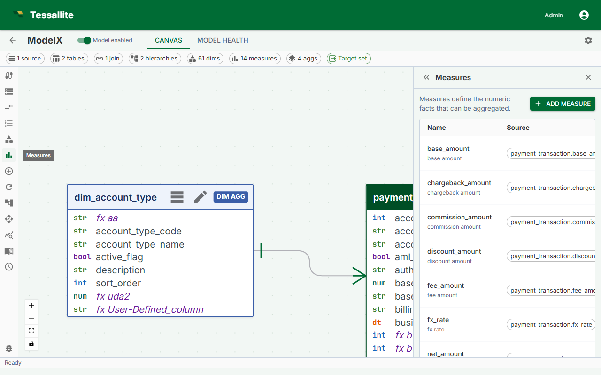

Define Measures

What this covers
A measure is a named aggregation computed from a column in a fact table. Measures are the numeric values BI tools query — revenue, order count, average session duration, and so on. This article explains what constitutes a measure, how to define one in Model Builder, and the impact of choosing additive versus non-additive aggregation types on query routing.
The three kinds of measures
Tessallite recognises three kinds. From the BI tool's point of view they all look the same — a named numeric value you can drop into a query. Internally they differ in where the SQL expression comes from.
| Kind | Source | When to use |
|---|---|---|
| Plain measure | A column reference plus an aggregation, e.g. SUM(amount). | The most common case. Use when the value lives in a column and you want a standard aggregation over it. |
| User-defined attribute (UDA) measure | A modeler-authored expression plus an aggregation, e.g. SUM(price * quantity * (1 + tax_rate)). The expression is stored on the model and inlined into queries. | Use when the value is a calculation across columns that doesn't change between queries. |
| Variant measure | A time-intelligence transformation of another measure — for example, the year-to-date of revenue, or the prior-year of orders. The SQL is generated per query because the partitioning depends on the dimensions in the grain. | Use when you want the same measure shifted across time without re-defining it. See Configure Time Variants. |
This page covers plain measures. User-defined attributes (UDAs) are not in the Toolbelt: you author them on the table itself — open a table on the canvas, click the Edit pencil, and use the Attributes tab. See User-Defined Attributes for the full walkthrough. Variant measures are configured under Time Variants on a base measure.
Before you start
- You must have a model open in Model Builder with a source table added to the canvas. A single-table model is implicitly fact; a multi-table model must declare its fact table before deploy.
- The source column you want to aggregate must exist in the model's declared fact table (or its implicit single-table fact).
- Dimensions should be defined before you configure aggregates, because the aggregation type determines which grains Tessallite can serve from pre-aggregated summaries.
Measure definition fields
| Field | Required | Description |
|---|---|---|
| Name | Yes | Internal identifier used in SQL and API references. Must be unique within the model. |
| Display name | No | Label shown in the BI tool field list. Defaults to the name if left blank. |
| Source table | Yes | The fact table containing the column to aggregate. |
| Source column | Yes | The column to aggregate. For COUNT, use the primary key column. |
| Aggregation type | Yes | The SQL aggregation function to apply. |
| Format | No | Presentation token controlling how Tessallite renders the value in the in-app Query panel. One of currency, percent, percent_2dp, integer, decimal_0, decimal_1, decimal_2dp, decimal_3, decimal_4, decimal_5, decimal_6. The token is stored on the measure and applied client-side; the underlying SQL value is unchanged. |
| Description | No | Free-text note exposed to BI tools that support field descriptions. |
Aggregation types
| Type | Additive | Use case | Example |
|---|---|---|---|
SUM | Yes | Totals of a numeric column | Total revenue, total quantity sold |
COUNT | Yes | Number of rows | Number of orders, number of sessions |
AVG | Yes | Mean of a numeric column | Average order value, average load time |
MAX | Yes | Highest value in a column | Latest event timestamp, highest sale price |
MIN | Yes | Lowest value in a column | Earliest order date, lowest recorded temperature |
COUNT DISTINCT | No | Number of unique values in a column | Unique customers, unique SKUs ordered |
Additive versus non-additive measures
An additive measure can be correctly re-aggregated from a coarser pre-aggregated summary. If Tessallite has a daily SUM(revenue) summary by country, it can answer a weekly query by summing those daily rows — the data source is not touched.
COUNT DISTINCT is non-additive. Summing distinct counts from a daily summary does not give the correct weekly distinct count because the same value may appear on multiple days. Tessallite requires an exact grain match to serve a COUNT DISTINCT measure from a pre-aggregated table. If no aggregate exists at the requested grain, the Query Router falls back to executing the query directly against the fact table.
Note: Plan your aggregates explicitly for every grain you expect to query if you use COUNT DISTINCT measures. Without a matching aggregate, those queries always hit the data source at full cost.
Steps
- Open a model in Model Builder and click Measures in the Toolbelt (left sidebar).
- Click Add Measure. The Drawer (right panel) opens with a blank measure form.
- Enter a Name. Use business-readable terms — for example,
total_revenuerather thancol_amt_sum. BI tools surface this identifier to end users. - Select the Source table from the dropdown. Only fact tables already added to the model are listed.
- Select the Source column. The dropdown lists all columns in the selected fact table.
- Select the Aggregation type. If the column contains non-numeric values and you need a row count, use
COUNTon the primary key rather than the data column. - Optionally enter a Display name and Description.
- Click Save. The measure appears in the Measures list in the Toolbelt and is available to the Query Router immediately.
Editing a measure
Click the measure name in the Toolbelt Measures list. The Drawer opens with the current values. Change any field and click Save.
Warning: Renaming a measure updates model-owned calculated-measure, KPI, scratchpad, saved SQL query, same-model cross-model-recipe step/combine, and model alias-map references in the same transaction. Recipe steps for other models remain unchanged. A rename is rejected with the blocking object and JSON path if Tessallite cannot safely rewrite a stored name-based reference. Stable-ID consumers do not need rewriting. Quantile proof rows for that measure are invalidated so queries fail back to the source until the aggregate is refreshed or rebuilt. Deployed snapshots and external BI reports remain immutable, so reports or dashboards that reference the old name can still break; coordinate the rename and redeploy the model.
Deleting a measure
Open the measure in the Drawer and click Delete. Tessallite removes the measure from all aggregates that included it. Any aggregate that relied solely on the deleted measure will contain no measures and should be updated or deleted to avoid build errors.